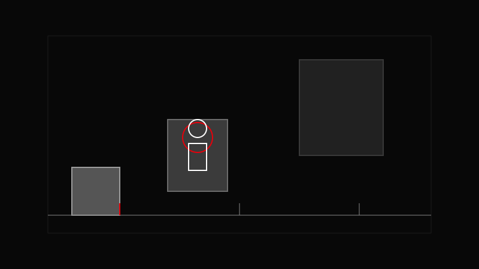

AVA CREATORS TOOLKIT · FRAMING
DEPTH LAYERS
Always build at least three layers in your frame.
Always build at least three layers in your frame.

Foreground, midground, and background separate your subject from a flat frame.
Add a foreground element.
Place your subject in the midground.
Use background to set context.
Adjust aperture to control separation.
Foreground blur instantly adds production value.
Shooting everything from eye level with no layers.